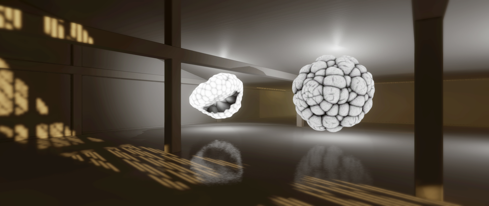
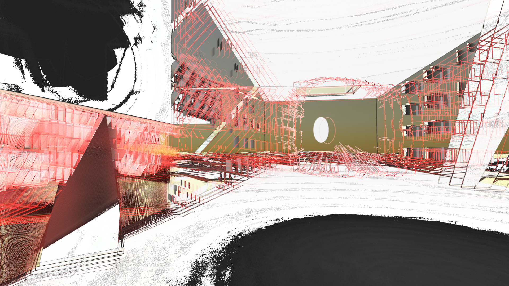

Paper Thin
Daniel Smith and Cameron Buckley
-

- 
- 
Click to Experience
Requirements
| Edge | Chrome | Chromium | Firefox | Firefox Nightly | Safari | |
|---|---|---|---|---|---|---|
| Desktop (360) | ✔ | ✔ | ✔ | ✔ | ✔ | ✔ |
| Google Cardboard | ✔ | ✔ | ✔ | |||
| Oculus Rift | ✔(Windows) | ✔(Windows) | ||||
| HTC Vive | ✔(Windows) | ✔(Windows) |
Note: Viewing content in 360-degrees on your Desktop or using a mobile device with Google Cardboard does not usually require any special browser setup. For instructions on how to setup your browser to work with a VR headset like the Oculus Rift or HTC Vive click on the browser name above. The Samsung Gear VR and Google Daydream are also good choices for experiencing WebVR. If the piece works on Google Carboard it is likely to work on these as well.
Description
Paper-Thin exists online (www.paper-thin.org) as a series of curated virtual reality spaces hosting interactive artist installations. Each month my collaborator, Cameron Buckley, and I work with an emerging artist on an installation which contributes to the virtual architecture. When the architecture of Paper-Thin is completely filled, we create new architecture for new art, rather than de-installing older artworks. In this way, Paper-Thin has evolved into a growing archive of virtual artworks. Each virtual architecture and its constituent artist installations thereby becomes one “volume” of the archive. Contributing artists to Volume 1 include Alan Resnick, Hunter Jonakin, Daniel Baird, Haseeb Ahmed, Rachael Archibald, Hugo Arcier, and Andy Lomas. Volume 2 is currently in production, and will include contributions from Shane Mecklenburger, Adam Ferriss, Jeron Braxton, Martina Menegon, Brenna Murphy, Mark Dorf, and Raman K. Mustafa. Because digital art has no material, and the involved technology is ever-changing, we can’t simply archive virtual art on a flash drive or “restore” artworks as one might restore a painting. As we know, hard drives, flash drives, tape decks, and nearly all digital storage devices corrupt over time. Furthermore, digital files stored on a flash drive are meaningless unless they are translated into some experiential format. As far as restoration, computer technology is so complex and interdependent, that one must preserve not only the artwork, but the operating system and technological hardware a given artwork requires. This is not a viable strategy for two people who work to avoid monetizing art as a gallery or museum would.
Our archival approach is to collect virtual artworks into a singular format, so that the collection itself becomes a precious “object” that is worthy of protection. In theory this consolidated digital “object” is easier to maintain, because of its singular format, it creates a greater imperative for preservation. Part of the difficulty with digital preservation is the typically fragmentary nature of disparate works. Paper-Thin attempts to alleviate this problem without compromising artists–we don’t sell artwork like a gallery.
In addition to creating the imperative for preservation, Paper-Thin indefinitely hosts all art installations as downloadable executables and equivalent desktop standalone programs for Mac, Linux, and Windows. These executables are profoundly more stable formats than online 3D renderers–which we also support. In other words, anyone who wishes to can download all the artworks for free. This means that copies of the art are effectively distributed to an indefinite number of global users, and this wide distribution and user-base functions as part of the preservation of Paper-Thin.
Bios
Alban Denoyel is 32-year-old French entrepreneur. He is the co-founder and CEO of Sketchfab. Prior to Sketchfab, he launched a web agency, and worked for 4 years in the 2D world of photojournalists. He graduated from ESSEC Business School (Paris, France).
Bobby Beck is the CEO and cofounder of the online animation school Animation Mentor, and online collaboration platform Artella. He is a former Pixar animator.